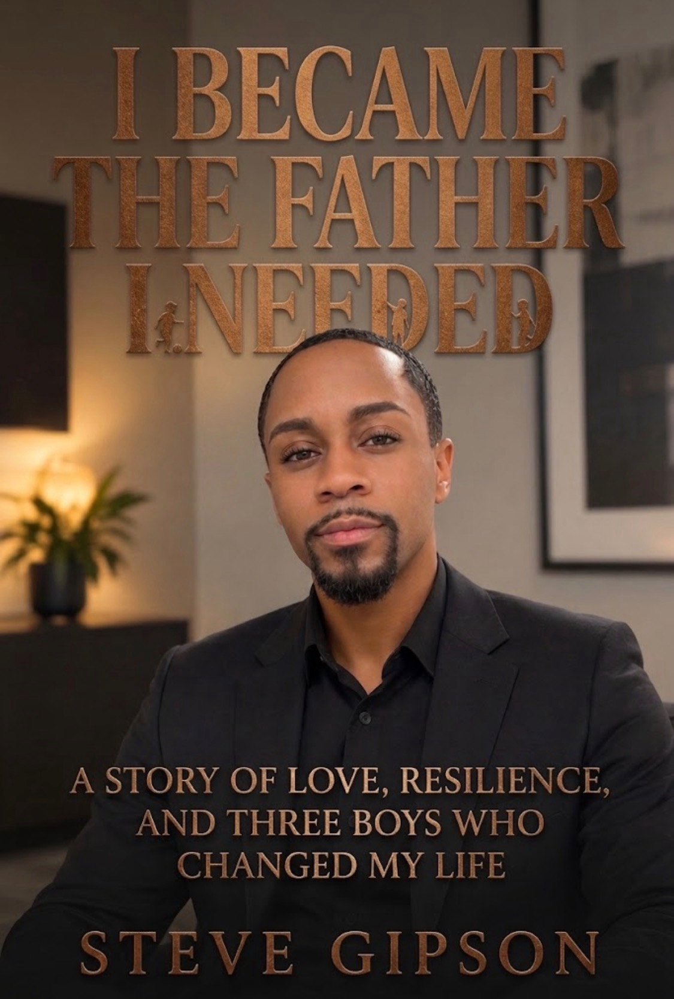

About the Book
I Became the Father I Needed is a powerful memoir about fatherhood, healing, foster care, adoption, and breaking generational cycles. Steve Gipson shares his journey from growing up without the father he needed to becoming the father he once wished for.
A story of resilience, love, personal growth, and turning pain into purpose.
Releasing November 5, 2026 at 12:00 AM
Available in hardcover, paperback, and e-book formats.
Read a Preview
Chapter One: The Man I Never Had
Steve Gipson grew up on the South Side of Chicago with a father who was present, but never quite present in the way a little boy needed.
There were good memories: summers together, laughter, wrestling on television, and a father whose goofy personality Steve still recognizes in himself. But underneath those moments was something much deeper: a child longing to be noticed, asked if he was okay, and told that he mattered.
As Steve grows older, that emptiness begins shaping everything: his relationships, his determination, and eventually the kind of father he promises himself he will become.
He leaves Chicago with little more than twenty dollars, a backpack, and a decision to build a different life.
But becoming the man he needed would come with a price.
He would lose time with his daughter. He would fight to build a family of his own. He would be judged for who he was, questioned as a father, and forced to defend the children he chose to love.
Yet every painful experience pushed him closer to one truth:
He could not change the father he had.
But he could change the father he became.
And that decision would change not only his life, but the lives of the children who would eventually call him Dad.
This is only Chapter One.
By the time you reach the final page, you'll understand why Steve Gipson didn't just survive his childhood.
He turned it into a purpose.
I Became the Father I Needed
Follow the Journey
Follow I Became the Father I Needed for book updates, previews, release announcements, and behind-the-scenes content.
Facebook TikTokShare the book on social media using:
#IBecameTheFatherINeeded #SteveGipson #Fatherhood #BreakingGenerationalCycles #Memoir
#Adoption #FosterCare #Healing #ICare #IShowedUp #ISurvived #IStayed